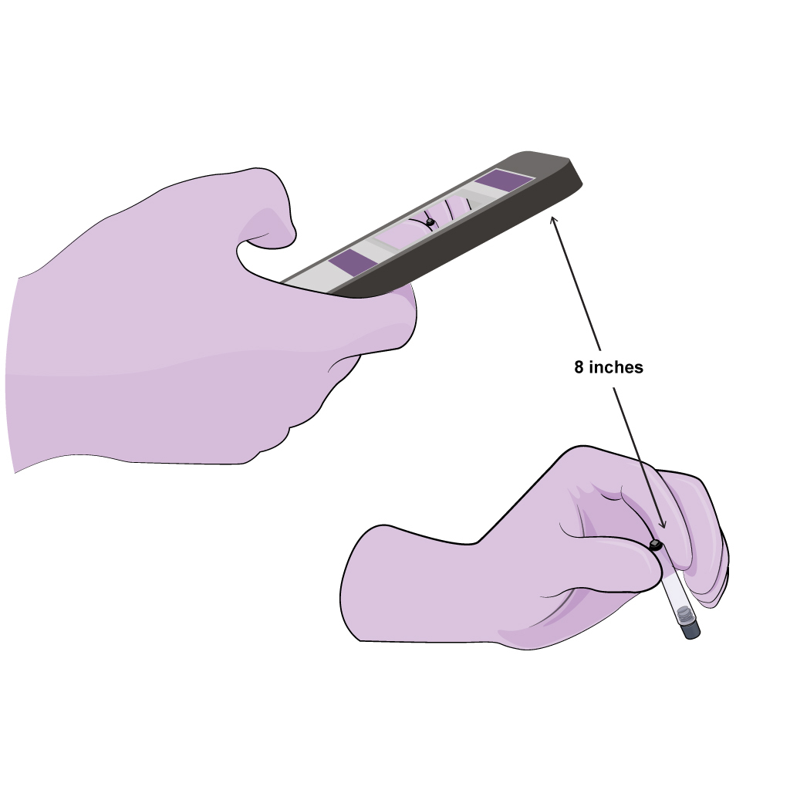

<div class="pre-scanner-wrapper" fxLayoutAlign="stretch">
  <div class="body-content" fxLayout="column" fxLayoutAlign="space-between">
    <div class="info-container">
      
      <h1>Make Sure</h1>
      <ol>
        <li>You place the test tube between your index finger and thumb</li>
        <li>The test tube is 8 inches away from the phone</li>
        <li>The colored end is facing the ground</li>
      </ol>
    </div>
    <mat-toolbar class="navigation-bar" fxLayoutAlign="space-around center">
      <button mat-button (click)="cancel()">Cancel</button>
      <button mat-button (click)="scanner()">Start Scanning</button>
    </mat-toolbar>
  </div>
</div>
